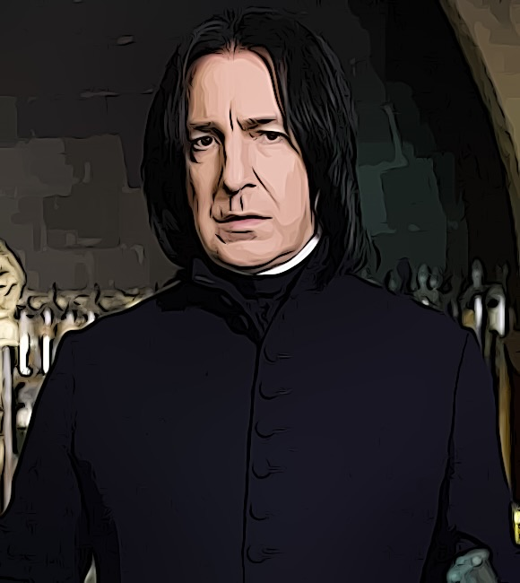

Steckbrief
Name: Severus Snape
Geburtsdatum: 9. Januar 1960
Eltern: Tobias Snape und Eileen Prince
Herkunft: Spinner's End, England
Zauberstab: Ist leider nicht bekannt.
Zugehörigkeit: Slytherin
Informationen zum Charakter
Severus Snape ist eine wichtige Figur in der "Harry Potter"-Filmreihe.
Er ist ein geheimnisvoller und oft undurchsichtiger Charakter, der sowohl als Lehrer an Hogwarts als auch als Anhänger von Lord Voldemort agiert.
Snape ist für seine scharfe Intelligenz, seinen sarkastischen Humor und seine Fähigkeit, seine wahren Absichten zu verbergen, bekannt.
Im Laufe der Geschichte wird seine komplexe Vergangenheit und sein wahrer Loyalitätsweg aufgedeckt, was zu einem unerwarteten Schicksal führt.
Informationen zum Schauspieler
Severus Snape wird im Film von Alan Rickman verkörpert.
Alan Rickman (geboren am 21. Februar 1946) spielte die Rolle des Severus Snape mit großer Hingabe.
Er brachte die Komplexität und Tiefe des Charakters auf beeindruckende Weise zum Ausdruck.
Alan Rickman wurde für seine Darstellung von Severus Snape hoch gelobt und von den Fans gepebt.